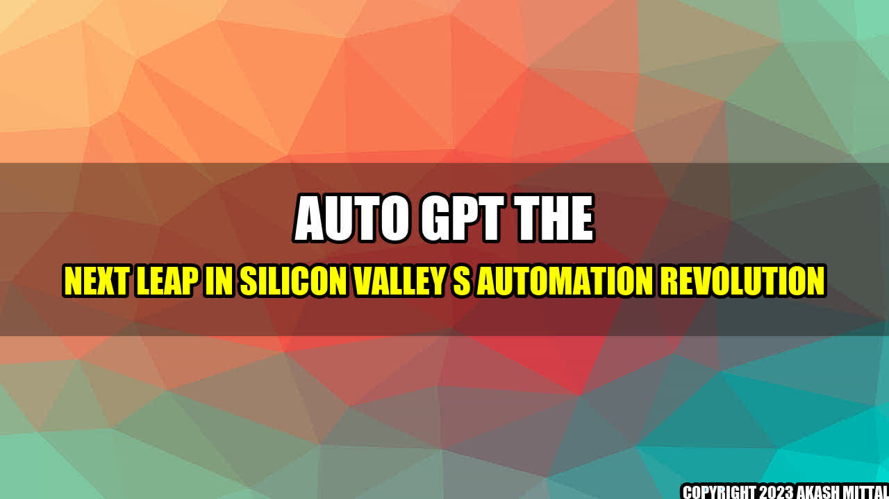

The Rise of Auto-GPT: How it's Changing the Face of Automation in Silicon Valley

Picture this: You're at work, staring at your computer screen, desperately trying to come up with engaging copy for your latest marketing campaign. The deadline is fast approaching, but you're at a loss for words. Suddenly, you remember a new tool that promises to make your life easier - Auto-GPT.
Auto-GPT is a natural language processing system that generates high-quality text, completely on its own. It uses advanced algorithms that can understand context, style, and tone to produce written content that is virtually indistinguishable from what a human writer could produce. And the best part? It's fast.
With Auto-GPT, you can cut down on the time and effort it takes to create written content, freeing you up to focus on other important tasks. Here are a few examples of how it's being used in Silicon Valley:
Concrete Examples of Auto-GPT in Action
- Automated News Articles: Many news organizations are turning to Auto-GPT to produce articles at lightning speed. For example, The Washington Post used the technology to cover the 2016 Summer Olympics, generating hundreds of articles in just a few days.
- Marketing Copy: As mentioned earlier, Auto-GPT can be used to create compelling marketing copy quickly and efficiently. Ad copy, email marketing campaigns, and social media posts are just a few examples of what it can do.
- Chatbots: Chatbots are becoming more sophisticated every day, and Auto-GPT is helping to drive that trend. By providing a more natural and engaging conversation, these bots are able to handle more complex tasks and provide better customer service.
Auto-GPT is truly a game-changer when it comes to automation in Silicon Valley. Here are three key takeaways:
- Auto-GPT can save companies significant time and money by automating the writing process.
- It has the potential to revolutionize industries that rely heavily on written content, such as journalism and marketing.
- As technologies like Auto-GPT become more sophisticated, they will continue to blur the line between human and machine-generated content.
Conclusion
The rise of Auto-GPT is just one example of the many ways that technology is changing the face of automation in Silicon Valley. As companies continue to push the boundaries of what's possible, we can only imagine what other breakthroughs are on the horizon.
Reference
Further Readings and Hashtags
Author: Akash Mittal
Category: Technology
Social
Share on Twitter Share on LinkedIn